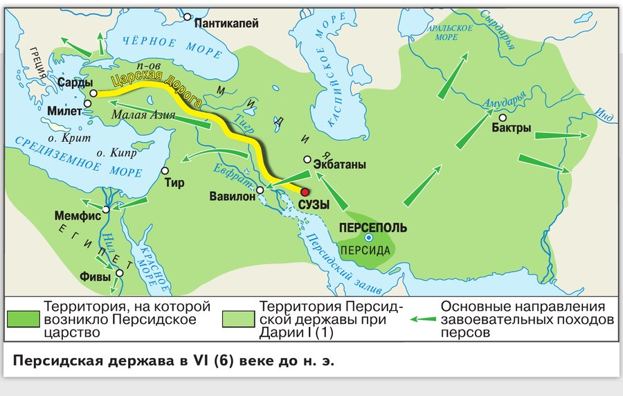
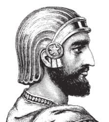
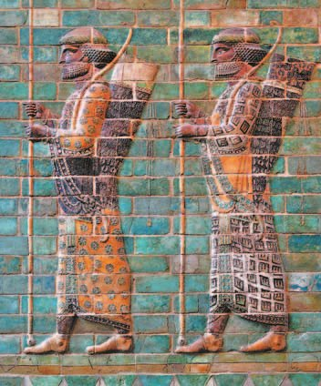
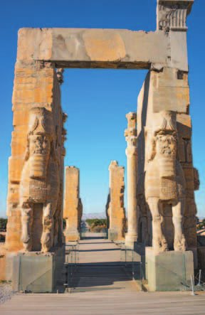
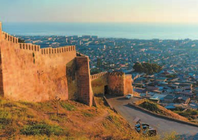
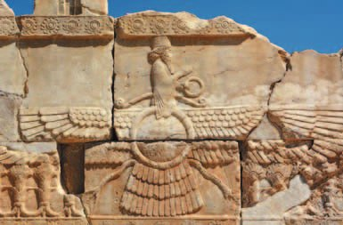

▲ Найди на карте Царскую дорогу и посмотри, какие края державы она соединяла.
Как возникло Персидское государство
К востоку от Месопотамии, на территории современного Ирана, обитали кочевые племена . Это были мужественные и воинственные люди, а главным их занятием было скотоводство.
В VII (7) веке до н. э. персы, издавна платившие дань сильному соседу — Мидии, признали зависимость от Ассирии. А после её падения снова стали платить дань Мидии, победительнице ассирийцев.
В середине VI (6) века до н. э. вождь одного из персидских племён, , подчинил остальные племена и объявил себя царём. Он создал сильное войско — одно из лучших для своего времени.
В 553 году до н. э. персы подняли восстание против Мидии. Кир разгромил войско мидийского царя и включил Мидию со всеми её владениями в состав новой Персидской державы — её называют ещё , по имени правящей династии.
В 547 году до н. э. персы захватили процветающую , где ещё в VII (7) веке до н. э. впервые начали чеканить монеты из сплава золота и серебра. Царь Лидии Крёз был известен своим богатством: его имя даже вошло в поговорку — «богат как Крёз».
Весной 539 года до н. э. Кир выступил на Вавилон. Он приказал выкопать вокруг города каналы и отвести в них воды Евфрата. По обмелевшему руслу реки персы ворвались в Вавилон и захватили город.
Все покорённые народы получили от Кира разрешение вернуться на родину, а статуи их богов, хранившиеся в Вавилоне как военные трофеи, он вернул. Персы старались использовать покорённое население в своих интересах, особенно знатных людей: им поручали собирать налоги с местных жителей, судить их и наказывать непокорных.
В 530 году до н. э. царь отправился в поход против кочевников-массагетов, живших к востоку от Каспийского моря, и погиб.
Но держава, созданная его завоеваниями, с его смертью не распалась и не потеряла ни одной территории.
К востоку от Месопотамии, на территории современного Ирана, обитали кочевые племена персов. Это были мужественные и воинственные люди. Главным занятием персов было скотоводство.
В VII (7) веке до н. э. персы, с давних пор платившие дань сильному соседнему государству Мидия, признали зависимость от Ассирии, а после её падения вновь стали платить дань победительнице ассирийцев Мидии. В середине VI (6) века до н. э. вождь одного из персидских племён, Кир II (2) Великий, подчинил остальные племена и объявил себя царём. Он создал сильное войско, одно из лучших для своего времени. В 553 году до н. э. персы подняли восстание против Мидии. Кир разгромил войско мидийского царя и включил Мидию и все её владения в состав новой Персидской державы (государства Ахеменидов — по названию правящей династии).
В 547 году до н. э. персы захватили процветающую Лидию, в которой ещё в VII (7) веке до н. э. впервые начали чеканить монеты из сплава золота и серебра. Царь этой страны Крёз был известен своим богатством. Его имя даже вошло в поговорку — «богат как Крёз».
Весной 539 года до н. э. Кир выступил в поход на Вавилон. Он приказал выкопать вокруг города каналы и отвести в них воды Евфрата. По обмелевшему руслу реки персы ворвались в Вавилон и захватили город.
После завоевания Нововавилонского царства все покорённые им народы получили разрешение Кира II (2), удостоенного прозвища Великий, вернуться на родину. Персидский царь вернул им их статуи богов, хранившиеся в Вавилоне в качестве военных трофеев. Персы стремились использовать в своих интересах покорённое население, особенно знатных людей. Им поручали собирать налоги с местных жителей, судить их, наказывать непокорных.
В 530 году до н. э. персидский царь предпринял поход против кочевников массагетов, обитавших к востоку от Каспийского моря, во время которого он погиб. Однако держава, созданная его завоеваниями, с его смертью не распалась и не утратила каких-либо территорий. Успех войн Кира и прочность созданной ими империи можно объяснить несколькими причинами. Кир, захватив Мидию, унаследовал всю её мощь. Он опирался на персидские и мидийские коневодческие племена. Побеждённые государства персы не обращали в зависимость, а делили на провинции, лишённые всякой автономии, — восстановить независимость в этих условиях им было почти невозможно.

- Какие государства и территории завоевал Кир II Великий? Подумай, почему ему это удалось.
1. Персы веками платили дань — сначала Мидии, потом Ассирии, потом снова Мидии. Как получилось, что именно они создали самую большую державу древности?
2. Кир отпустил покорённые народы домой и вернул им статуи богов. Зачем победителю так поступать?
3. Вавилон взяли, отведя воду Евфрата. Вспомни §15: как взяли Ниневию — и что общего у этих двух историй?
4. Кир погиб в походе, но держава не потеряла ни одной территории. Почему так вышло?
Дарий I
Со смертью Кира завоевания не прекратились: в 525 году до н. э. персы захватили Египет.
Наивысшего могущества держава достигла при , правившем в конце VI (6) — начале V (5) века до н. э. Он подчинил земли на севере Балканского полуострова, часть Индии и новые территории в Средней Азии. Границы державы объединяли десятки стран и народов с разной культурой, и единство государства Дарий поддерживал главным образом силой оружия.
Он разделил империю на 20 провинций — . Во главе каждой стоял наместник, сатрап: он судил, отвечал за сбор налогов, за состояние хозяйства и за работу местных чиновников.
За самими сатрапами наблюдали царские слуги — их называли . Они доносили обо всех злоупотреблениях.
Западные провинции соединили с Сузами мощёной . По всей её длине стояли конные заставы с гонцами: сменяя друг друга, они доставляли царю сообщения о вторжениях и восстаниях и передавали войскам его приказы.
Дарий ввёл единую монету — . По его распоряжению восстановили канал, соединявший Средиземное море с Красным (его построил около 600 года до н. э. фараон Нехо), — и торговые пути заметно сократились.
Столицей персов при Дарии стал : сюда приезжали послы из провинций вручать царю богатые дары.
А на самой северной границе, у «Каспийских врат», персы поставили укрепления против кочевников с Кавказа. Крупнейшее из них выросло в город, который мы знаем как — он стоит в России, в Дагестане, и входит в число древнейших городов мира.
Персы создали державу, которая стала самым могущественным государством Древнего Востока.
Со смертью Кира завоевания персов не прекратились. В 525 году до н. э. они захватили Египет. Наивысшего могущества Персидская держава достигла при Дарии I (1), правившем в конце VI (6) — начале V (5) века до н. э. Дарий подчинил земли на севере Балканского полуострова, часть Индии и новые территории в Средней Азии. Границы его державы объединяли десятки стран и народов с разной культурой. Единство государства Дарий I (1) поддерживал главным образом силой оружия.
Он разделил свою огромную империю (не считая самой Персиды и некоторых окраинных зависимых владений) на 20 провинций — сатрапий. Во главе каждой стоял наместник — сатрап. Он осуществлял судебную власть, отвечал за сбор налогов, состояние хозяйства, контролировал работу местных чиновников. За деятельностью сатрапов наблюдали царские слуги, их называли «уши царя». Они доносили обо всех злоупотреблениях.
Западные провинции империи соединили с Сузами мощёной дорогой. Её называли Царской. На всём протяжении дороги располагались конные заставы с гонцами. Сменяя друг друга, они доставляли царю сообщения о вторжениях и восстаниях, передавали войскам его приказы.
Дарий I (1) ввёл единую монету — золотой дарик. По его распоряжению восстановили канал, соединявший Средиземное море с Красным (канал, построенный около 600 года до н. э. фараоном Нехо), который существенно сокращал торговые пути.
Столицей персов при Дарии I (1) стал город Персеполь. Сюда приезжали послы из провинций для вручения царю богатых даров. Персы создали державу, которая стала самым могущественным государством Древнего Востока.

▲ Опиши вооружение персидского воина.


- Почему реформы Дария I способствовали расцвету Персии?
5. Зачем Дарию понадобились «уши царя», если сатрапов он назначал сам?
6. Царская дорога с конными заставами — зачем она нужна, если по ней не возят товары?
7. Зачем вводить единую монету на всю державу?
8. Дербент стоит в России, в Дагестане. Как он попал в параграф про Персию?

Религия персов
Главным и самым почитаемым из добрых богов у персов был — его считали творцом воды, земли, огня, света, тепла, растений и животных.
Он разделил свет и тьму — и поэтому в мире борются эти две силы, добро и зло. Поддерживать мировой порядок Ахурамазде помогают другие божества. Но его свита олицетворяет не явления природы, как в других религиях Древнего Востока, а понятия: добромыслие, правду, справедливость, волю, смирение, здоровье, совершенство, бессмертие.
Персы верили и в злых божеств, которые насылают болезни, смерть, холод, голод, разных тварей и хищных зверей. Их возглавлял — злой бог, равный по силе Ахурамазде. Оба вечно враждовали, и ни один не мог одолеть другого.
Эти идеи развил проповедник Зороастр (Заратуштра, Заратустра). Он проповедовал среди персов и родственных им народов, и учение назвали по его имени — .
Проповедник учил: почитать надо только добрых богов во главе с Ахурамаздой, встать на их сторону в борьбе против зла — и добро когда-нибудь победит в решающей битве.
Главным и наиболее почитаемым из добрых богов у персов был Ахурамазда, которого считали творцом воды, земли, огня, света, тепла, растений, животных. Он разделил свет и тьму, и поэтому в мире борются эти две силы, которые символизируют добро и зло. Поддерживать мировой порядок Ахурамазде помогают другие божества. Эта свита бога олицетворяет не явления природы, как в других религиях Древнего Востока, а такие понятия, как добромыслие, правда, справедливость, воля, смирение, здоровье, совершенство, бессмертие.
Персы верили в существование злых божеств, которые насылают болезни, смерть, холод, голод, различных тварей, хищных зверей. Их возглавлял равный по силе доброму богу Ахурамазде злой бог Ариман. Оба вечно враждовали друг с другом, и ни один не мог одолеть другого.
Эти идеи развил проповедник Зороастр (Заратуштра, Заратустра). Он проповедовал среди персов и родственных им народов. Учение назвали по его имени — зороастризм. Проповедник учил, что люди должны почитать только добрых богов во главе с Ахурамаздой, встать на их сторону в борьбе против зла, и добро когда-нибудь победит в решающей битве.
- Подумай, почему зороастризм получил широкое распространение на территории Персии.
9. Свита Ахурамазды — это правда, справедливость, здоровье, бессмертие. Чем это отличается от богов Египта и Междуречья?
10. Геродот писал, что персы больше всего ненавидели ложь. Как это связано с их верой?
11. Ахурамазда и Ариман равны по силе, и ни один не может одолеть другого. Но Зороастр учил, что добро когда-нибудь победит. Нет ли тут противоречия?
Подведём итоги
- Какие достижения Кира II Великого способствовали созданию мощной Персидской державы?
- Как ты думаешь, почему Персию стали называть «страна стран», а её правителя «царём царей»?
- Сравни государственное устройство Персии с устройством соседних стран. Способствовало ли это укреплению государства?
- Подумай, почему зороастризм получил широкое распространение на территории Персии.
Сформулируй ответ на главный вопрос параграфа — что позволило персам создать самую большую державу древности и долго удерживать её от распада? Приведи два-три довода.
Проверь себя
Нажимай по очереди — от самого древнего события к самому близкому к нам.
1. Чему персы, по Геродоту, учили своих детей?
2. Как Кир взял Вавилон?
3. На что Дарий I разделил империю?
4. Зачем нужна была Царская дорога?
5. Что такое золотой дарик?
6. Кто в зороастризме противостоит доброму богу Ахурамазде?
Расскажи вслух
Как персы стали державой
- Кочевники-скотоводы к востоку от Месопотамии; платили дань Мидии, потом Ассирии, потом снова Мидии.
- Середина VI века до н. э.: Кир II Великий подчинил персидские племена, создал войско; 553 — восстание против Мидии; 547 — Лидия; 539 — Вавилон по обмелевшему руслу Евфрата.
- Отпустил покорённых домой и вернул им статуи богов; знатным поручал налоги и суд; погиб в 530 году, но держава не распалась.
Дарий I и управление
- 525 — захват Египта; при Дарии — север Балкан, часть Индии, Средняя Азия; десятки стран и народов.
- 20 сатрапий во главе с сатрапами; «уши царя» следят за ними; Царская дорога с конными заставами к Сузам.
- Единый золотой дарик; восстановленный канал из Средиземного моря в Красное; столица Персеполь; на севере — крепость у «Каспийских врат», нынешний Дербент.
Вера персов
- Ахурамазда — добрый бог, творец воды, земли, огня, света, тепла, растений и животных; он разделил свет и тьму.
- Его свита — не явления природы, а понятия: добромыслие, правда, справедливость, воля, смирение, здоровье, совершенство, бессмертие.
- Ариман — равный по силе злой бог. Зороастр (Заратуштра) учил почитать добрых богов и встать на их сторону: добро когда-нибудь победит.